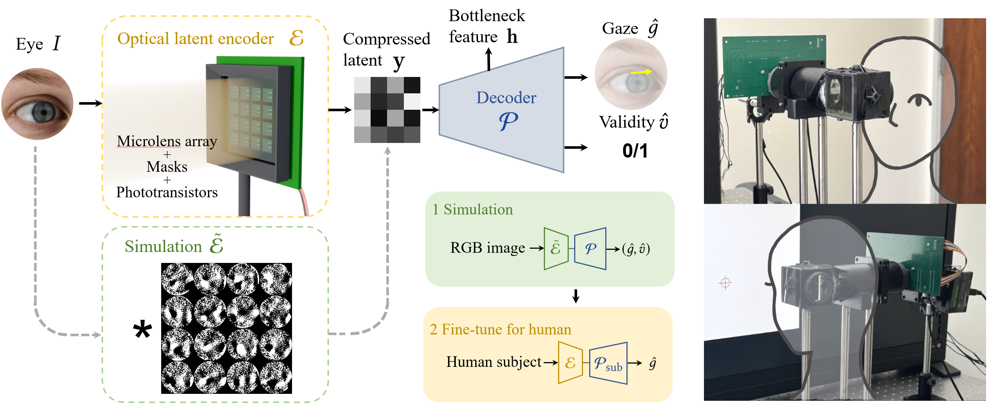

Low Latency Gaze Tracking via Latent Optical Sensing
Yidan Zheng, Matheus Souza, Kaizhang Kang, Qiang Fu, Hadi Amata, Wolfgang Heidrich
Siggraph Asia 2026.

Overview of low-latency gaze tracking system.
Our system replaces conventional high-resolution cameras with a fully passive optical latent encoder 𝓔. Light from the eye I is modulated by a microlens array and co-designed binary masks, producing a compressed latent measurement 𝐲 captured by a 16-element phototransistor array. These features are mapped to gaze direction ĝ and validity v̂ via a lightweight MLP 𝓕 and predictor 𝓟. Our end-to-end pipeline (bottom center) uses simulation-to-real transfer with human-subject fine-tuning to achieve a total latency of less than 4 ms. (Right) Experimental setup and hardware implementation.
Abstract
We present a real-time gaze tracking system that directly acquires task-relevant latent features using a fully passive optical encoder. Instead of forming and processing full-resolution images, our approach leverages a microlens array with a co-designed binary chromium mask to perform spatially multiplexed optical encoding, producing a compact set of measurements sufficient for gaze estimation. By integrating sensing and feature extraction in the optical domain, the proposed system eliminates the need for high-bandwidth image readout and substantially reduces computational overhead. The encoded measurements are captured by a 4 × 4 phototransistor array and mapped to gaze direction using a lightweight neural network. Our proof-of-concept prototype enables an end-to-end sensing-to-inference latency of 3.4 ms, outperforming published research systems. We demonstrate the effectiveness of our approach on both simulated and real-world data, achieving competitive gaze estimation accuracy while significantly reducing end-to-end latency compared to conventional camera-based pipelines. The proposed system establishes a new operating point in the accuracy–latency–compute trade-off for latency- and resource-constrained gaze tracking. This work highlights the potential of task-driven optical sensing for ultra-low-latency, computationally efficient human-computer interaction systems.
Paper
Paper [Yidan2026Gaze.pdf]
Supplementary [Yidan2026Gaze_supp.pdf]
Code GitHub